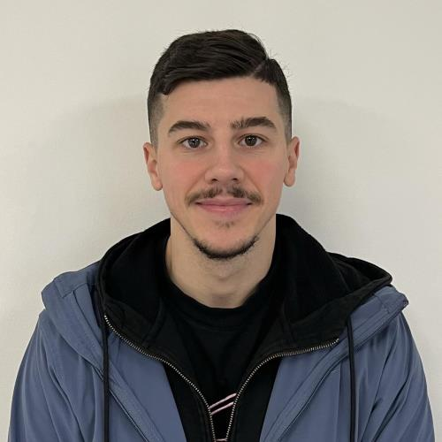

Hej! Mitt namn är Armin Zuberovic.
Systemutvecklarstudent.
Jag utbildar mig till systemutvecklare med fokus på C# och .NET. Jag är nyfiken på både frontend och backend och tycker om att utveckla mina kunskaper genom praktiska projekt. Mitt mål är att skapa smarta, användarvänliga och hållbara digitala lösningar.
Om mig

Lite mer om mig
Jag är en engagerad och nyfiken person med stort intresse för teknik och problemlösning. Just nu studerar jag till systemutvecklare med inriktning mot C# och .NET.
Jag tycker om att lära mig nya tekniker och utveckla mina färdigheter genom praktiska projekt. Jag är särskilt intresserad av både frontend och backend och vill fortsätta utvecklas inom dessa områden.
Mitt mål är att arbeta som systemutvecklare och bidra till att skapa användarvänliga och effektiva digitala lösningar.